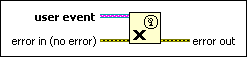

Destroy User Event Function
Owning Palette: Events Functions
Requires: Base Development System
Releases a user event reference by destroying its associated user event refnum. Any Event structures registered for this user event no longer receive the event.

 Add to the block diagram Add to the block diagram |
 Find on the palette Find on the palette |